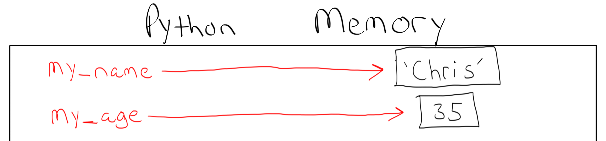
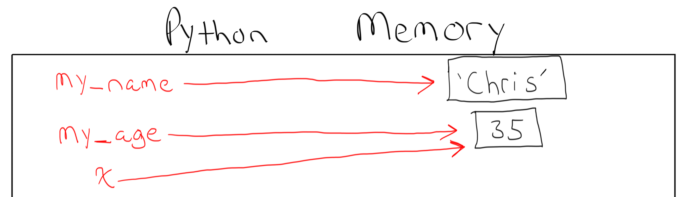
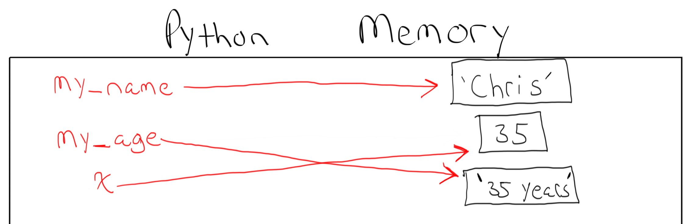
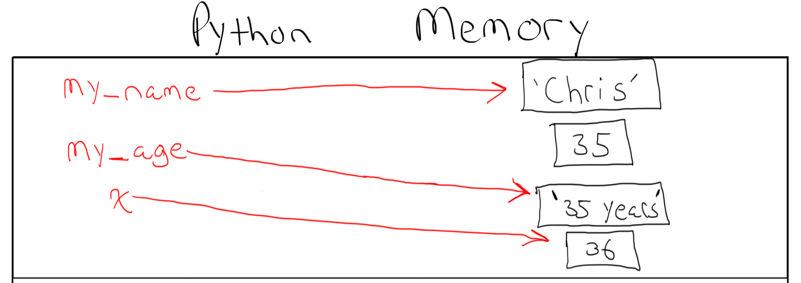

Variables and Types¶
Python variables make it possible to keep track of objects that are stored in memory throughout your Python program. You may be wondering what an “object” is. It turns out you have worked with objects already in this book and in your Jupyter Notebooks. Essentially, everything in Python is an object.
Here is a string with my name and a number with my age.
The string 'Chris' and the number 35 are examples of
objects in Python.
Be sure to create a new Jupyter Notebook and call it intro_to_variables. You can follow along by typing these examples out in your own Jupyter Notebook and executing the code.
print('Chris')
print(35)
Chris
35
So what is actually happening behind the scenes in Python when those lines of code are executed?
For the line
print('Chris'), Python willcreate a string object
give it the value
'Chris'print it to the screen
For the line
print(35), Python willcreate an integer object
give it the value
35print it to the screen
But what if we want to use these objects again later in our program? At the moment we can not. These objects were created in the computers memory but they will just remain there forgotten. There is no way to retrieve them or get them back.
This is where variables come in to play in programming.
In Python you can create a variable using the equal sign =.
Variables have names and are assigned to an object that is
in memory. The Variable holds the value of a specific object in memory
so we can keep track of the object and use it for other purposes.
For example, here I create two variables named my_name and my_age.
my_name = 'Chris'
my_age = 35
my_name
'Chris'
my_age
35
print(my_name)
print(my_age)
Chris
35
When the line my_name = 'Chris' is executed, Python will
create a string object
give it the value
'Chris'the variable
my_nameis bound to that object. Programmers will refer to this as “The value ofmy_nameis assigned'Chris'.
When the line my_age = 35 is executed, Python will
create an integer object
give it the value
35the variable
my_ageis bound to that object. Programmers will refer to this as “The value ofmy_ageis assigned35.

Variables have a name, a type, and a value. The value is the object in memory
which the variable is bound to. The variable my_name has the name “my_name” and is of
type string. It’s value is Chris. You can always get the type of an object
by using the type() function. Here str stands for type string and int stands
for type integer.
type(my_name)
str
print(type(my_name))
print(type(my_age))
<class 'str'>
<class 'int'>
Let’s create a new variable x and set it to the value of my_age.
x = my_age
print(x)
35
When we created the variable x above, Python does not create a new integer object with the value 35 in memory.
Instead, x is just another reference to the existing 35 that is already in memory.

In Python you can change the type and value of an existing variable.
For example we can change my_age to a string.
my_age = '35 years'

print(my_name)
print(my_age)
print(x)
Chris
35 years
35
print(type(my_name))
print(type(my_age))
print(type(x))
<class 'str'>
<class 'str'>
<class 'int'>
Let’s make one more final change and change the value of x.
Now the object that has the value of 35 is not assigned to
any variable. It is in memory but will be garbage collected
because nothing is referencing it in the code.
x = 36
print(my_name)
print(my_age)
print(x)
Chris
35 years
36

Let’s use variables now in some more examples.
a = 5
b = 10
c = a + b
print(a)
print(b)
print(c)
5
10
15
a = 'hello'
b = 'world'
c = a + b
print(a)
print(b)
print(c)
hello
world
helloworld
x = 2
y = 3
z = x * x + y * y
print(z)
13
intro = "Hello! My name is "
name = "Chris "
ending = "and I am "
age = "35 years old."
print(intro + name + ending + age)
Hello! My name is Chris and I am 35 years old.
Remember, you can not add two objects together that are different types.
Here we are concatenating strings which is okay but then we try to add
the integer 35 to the string.
name = 'Chris'
print(type(name))
age = 35
print(type(age))
print('My name is ' + name + ' and I am ' + age + 'years old.')
<class 'str'>
<class 'int'>
---------------------------------------------------------------------------
TypeError Traceback (most recent call last)
<ipython-input-17-2f4cf939edd8> in <module>
3 age = 35
4 print(type(age))
----> 5 print('My name is ' + name + ' and I am ' + age + 'years old.')
TypeError: must be str, not int
Take some time on your own to play around with variables and see what you can create. Even if it’s simple that is okay. The best way to learn is by doing!